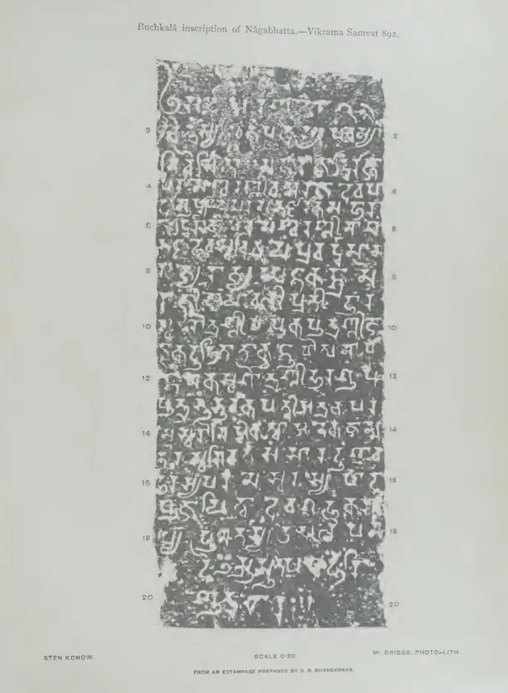
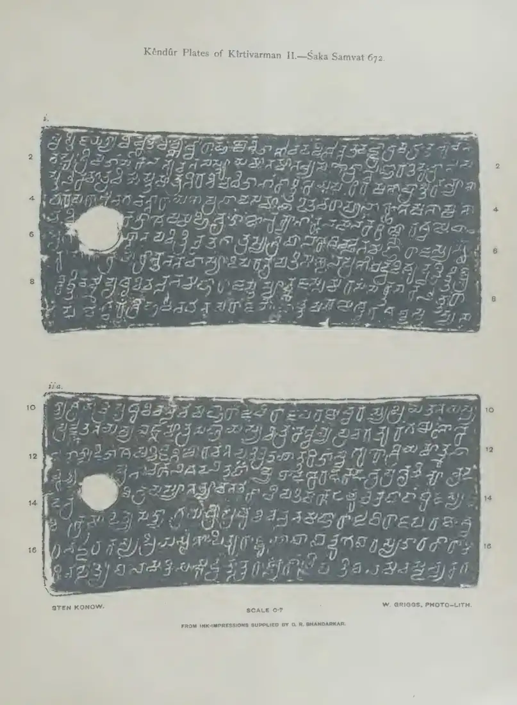
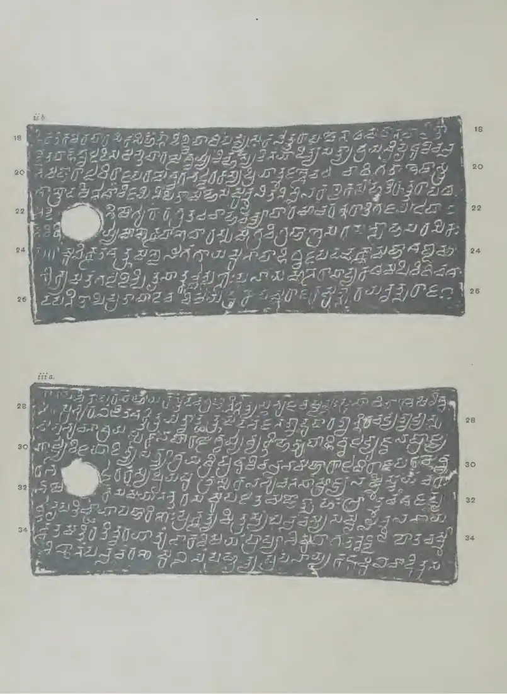
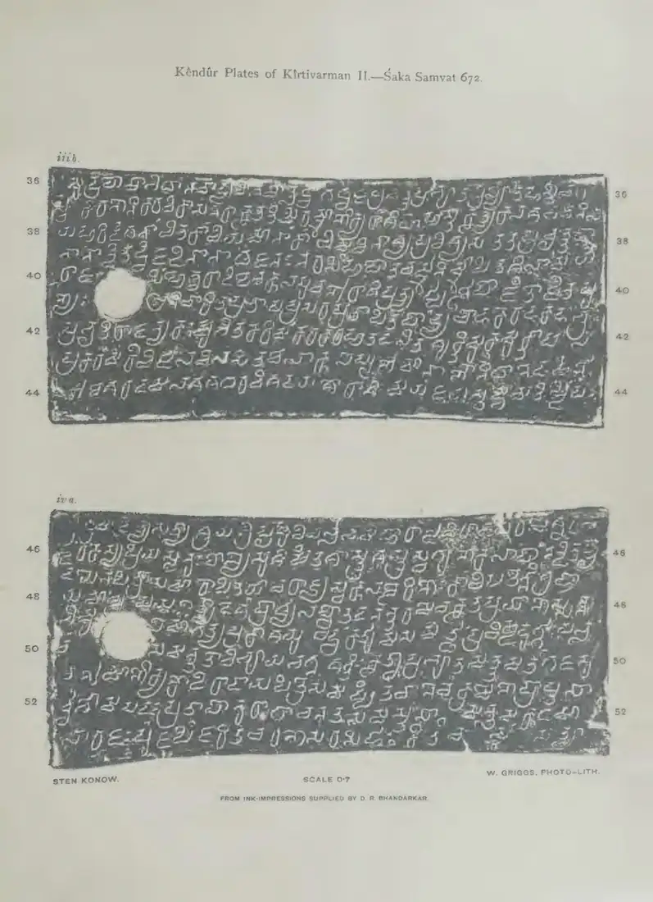
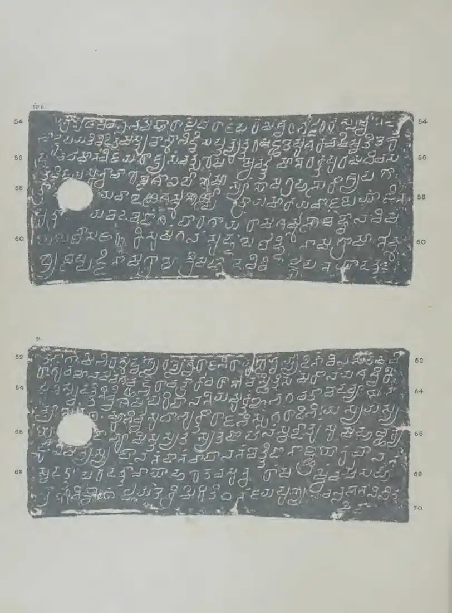

Kéndúr plates of Kírtivarman II
KENDUR PLATES OF KIRTIVARMAN II.
SAKA SAMVAT 672.
BY K. B. PATHAK, PROFESSOR OF SANSKRIT, DECCAN COLLEGE, POONA.
This inscription was first brought to my notice in May 1902 by Bhṛingârkar bâvâ, a well-known reciter of kirtans at Poona. He was then engaged in a literary controversy about the identity of Jñânêsvara, the well-known saint of Alândi, with Jñânêsvara, the author of the Jñânêsvarî, a famous Marâthî commentary on the Bhagavadgîtâ, and asked me whether the inscription threw any light on the point he was discussing. When I told him that the grant was issued in Śaka 672, and had nothing to do with the author of the Jñânêsvarî, who was contemporary with Râmadêva, the last of the Yâdava kings of Dêvagiri, Bhṛingârkar bâvâ was kind enough to lend me the plates for the purpose of editing the inscription.
1 Read °राजाधिरज°. 2 Read °सगीच°.
3 Read °वीत्पन्न°. 4 Read °सगीच°.
5 Here and in the following the rules of saṅdhi have not been observed.
6 The words परमेश्वरो and निर्द्धी as they stand, make no sense, and I can suggest no correction.
7 Some such reading as °जन्मान्तरेष्वनिवर्ति° might be expected.
8 Read °दुःखा°. 9 Read परमेश्वरस्य. 10 Read पादौ.
11 Read पूजयित्वा. 12 Read कारयित्वा. 13 Read पुनस्स्य.
14 Read उपलेपने. This word seems to have been here used in the sense of “engraving.”
15 Read °हरिः. 16 Read सूचधारः.
Plate 1 is bound after this page.
The plates were found at Kèndûr, a village in the Khèd tâluka of the Poona district. They belong to Mr. Purushòttama Ràjapâthak, now residing at Kèndûr. There are five plates, the first and the last of which are inscribed on one side only. The plates are equal in size, measuring long by broad. Their edges are raised into rims to protect the writing. The ring on which the plates are strung is about half an inch thick and in diameter. The seal on the ring is oval, measuring 2" by . It has, in relief, on a countersunk surface, a standing boar facing to the proper left. The weight of the plates, together with the ring and seal, is 225 tolas. The inscription is in a state of excellent preservation. The characters belong to the southern class of alphabets. The language is Sanskrit throughout, and with the exception of the invocatory verse at the beginning and the benedictive and imprecatory verses at the end, the whole is in prose.
The grant is one of the Western Chalukya king Kirtivarman II., and is issued from the city of Raktapura, which is probably to be identified with Lakshmésvara, in the Dharwar district. It records that on the full moon day of the month Vaiśakha, during a lunar eclipse, in Śaka 672 expired, in the sixth year of his reign, when his victorious camp was at Raktapura, Kirtivarman II., at the request of his great queen, granted to a Brâhmana named Râmaśarman, the village of Beppatṭi in the centre of the villages of Penbasaaru, Kisuman-galam, Sullam and Perbballi, in the district of Velvola. The five villages can be easily identified with. Behatṭi, Hebsur, Kusugalla, Sulla and Hebballi, in the Dharwar district. Velvola is a Sanskritized form of Belvola or Belvala, a name which is applied even at the present day to a portion of the southern Marâthâ country.
Before the discovery of the present grant, only three records of Kirtivarman II.'s time were known to scholars. Of these the most important is the Vakkalêri grant, which has been published by Mr. Rice1 and re-edited by Dr. Kielhorn.2 As interpreted by these scholars, the date of that grant is Śaka 679 expired, which is spoken of as the eleventh year of Kirtivarman's reign, while, according to the present grant, Śaka 672 expired was the sixth year of his reign. These two statements cannot be reconciled. It is, however, important to note that the present grant was issued five years earlier, and is perfectly legible throughout. It also mentions the occurrence of a lunar eclipse. Therefore the date in this grant, which admits of verification, is correct. But in the Vakkalêri grant, the first word describing the Śaka year is not legible. Both Mr. Rice and Dr. Kielhorn have proposed to read it as nava, nine, and this view has been endorsed by Dr. Fleet. But the proposed emendation does not agree with the present inscription, according to which Śaka 677 expired was really the eleventh year of the king's reign.
The historical information in the present grant may be briefly summarised thus. The first king of the Chalukya line was Polekêsin who performed horse sacrifices. Then came his son Kirtivarman I., who defeated the kings of Vanavâsi and other countries. His brother Mangaliśa being passed over, we are next introduced to Satyâśraya, better known as Polekêsin II., who defeated the famous Buddhist king Harshavarchana, the patron of the illustrious Chinese traveller Hiuen Tsiang and the hero of Bâpa's immortal work, the Harshacharita. Polekêsin II.'s son, Vikramâditya I., was the next king, who recovered, by means of his horse Chitrakantha, part of the Chalukya dominions, which had been overrun by the Pallavas, and had obeisance done to him by the lord of Kâñchi, who had bowed down to none other. Vikramâditya I.'s son and successor was Vinayâditya, who broke the confederacy of the Chôlas, Kêralas, Pândyas and Pallavas, and defeated the paramount sovereign of Northern India. Vinayâditya's son Vijayâditya, the next king, had greatly assisted his father and grandfather in their wars. Though suddenly taken prisoner by the enemy, whom he had put
1 Ind. Ant. Vol. VIII. p. 23 ff.
2 Above, Vol. V. p. 200 and ff.
to flight, he skilfully effected his escape and restored the splendour of the Chalukya empire. He was succeeded by his son Vikramāditya II., who led an excursion into the Tuṇḍāka country, defeated his natural foe the Pallava king Nandipôtavarman, and entered the Pallava capital Kāñchí, but did not destroy it. He restored to the Rájasimhésvara and other temples, which had been caused to be built there by Narasimhapôtavarman, heaps of gold and rubies, which had been taken away from them. Vikramāditya II. was succeeded by his son Kīrtivarman II., who issued the present grant.
TEXT.1
First Plate.
- 1 Svasti [|*] Jayaty=âvishkrita[m] Vishṇôr=vvârâham kshôbhit-ârnavam [|*]
dakshiṇ-ônnata-damśhtr-âgra-viśrânta-bhuvanam - 2 vapuh [|*] Śrīmatâm sakala-bhuvana-samśtûyamâna-Mânavya-sagôtrâṇâm Hâr[i]ti-
putrâṇâm sa- - 3 pta-lôkamâtribhis=saptamâtribhir=abhivardhitânâm Kârttikêya-parirakshaṇa-prâsta(pta)-
kalyâṇa- - 4 paramparâṇâm bhagavan-Nârâyaṇa-prasâda-samâsâdita-varâha-lâñchhan-êkshaṇa-
kshaṇa- - 5 vaśi-krit-âsôsha-mahîbhrîtâñ=Chalukyânâm kulam=alamkarishṇôr=asvamêdh-âva-
- 6 bhrîthasnâna-pavitrî-krita-gâtrasya śrî-Polekêsi-vallabha-mahârâjasya sû-
- 7 nuh parâkram-âkrânta-Vanavâsy-âdi-paranripati-maṇḍala-prapibaddha-viśuddha-kīrtti-
śrî- - 8 Kīrttivarmma-prîthu(thi)vívallabha-mahârâjas=tasy=âtmajas=samara-samśakta-sakalôttarâ-
- 9 pathêsvara-śrî-Harshavardhana-parâjay-ôpâtta-paramêsvara-śabdas=tasya Sa-
Second Plate; First Side.
- 10 tyâśraya-śrî-prîthu(thi)vívallabha-mahârâjâdhirâja-paramêsvarasya priyatanayasya
- 11 prajñâta-nayasya khatga(ḍga)-mâtra-sahâyasya Chitrakaṇthâkhya-pravara-turaṅgamên=
aikê- - 12 n=aiv=ôtsâdit-âsôsha-vijigîshôr=avanipati-tritay-ântaritâm svagurô śriyam=
âtmasâ- - 13 t-kritya prabhâva-kuliśa-dalita-Pâmḍya-Chôla-Kêrala-Kalabhra-prabhrîti-bhûbhrîd-a-
- 14 dabhra-vibhramasy=ânanyâvanata-Kâmchîpati-makuṭa-chuṅbita-pâdâmbujasya
- 15 Vikramāditya-Satyâśraya-śrî-prîthu(thi)vívallabha-mahârâjâdhirâja-paramêsva-
- 16 ra-bhatṭârakasya priyasûnôh pitur=âjñayâ Bâlêndugê(sê)kharasya Târakârâti-
- 17 r=iva daityabalam=atisamuddhatam trairâjya-Kâmchîpati-balam=avashṭabhya kara-
Second Plate; Second Side.
- 18 dîkrita-Kavêra-Pârasîka-Simhaḥ-âdi-dvîp-âdhipasya sakal-ôttarâpatha2-nâtha-mathan-
ôpârjit-ô- - 19 rjita-pâlîdhvaj-âdi-samasta-pâramaisvaryya-chinha(hna)sya Vinayâditya-Satyâśraya-
śrîprîthu(thi)vívalla- - 20 bha-mahârâjâdhirâja-paramêsvara-bhatṭârakasya priy-âtmajas=śai[śa*]va êv=âdhigat-
âsôsh-âstra- - 21 śâstrô dakshiṇâśâ-vijayini pitâmahê samunmûlita-nikhila-kaṇṭaka-saṅhatir-
uttarâpatha- - 22 vijigîshôr=gurôr=agrata êv=âhava-vyâpâram=âcharann=arâti-gaja-ghatâ-pâṭa-
1 From the original plates.
2 The engraver has originally written °pathê, but corrected it.
Plate 2 is bound after this page.
Plate 3 is bound after this page.
23 na-viśiryyamâṇa-kripâṇa-dhâras=samagra-vigrah-âgrêsara[h*] san=sâhasa-rasikah
24 parâm(n)mukhîkrita-śatrumaṇḍalô Gamgâ-Yamunâ-pâlidhvaja-paḍadhakkâ-mahâśabda-mâ-
25 ṇikya-mataṅgaj-âdîn=pitrisât=kurvvan=paraih palâyamânair=âsâdya katham=api
vidhivaśâ-
26 d=apanîtô=pi pratâpâd=êva vishaya-prakôpam=arâjakam=utsârayan=Vatsarâja i-
Third Plate; First Side.
27 v=ânapêkshit-âpara-sâhâyakas=tad-avagrahân=nirggatya svabhuj-âvashṭambha-prasâdbit-âsêsha-viśva-
28 mbharaḥ prabhur=akhamṛdita-śaktitrayatvât(ch)=chhatru-mada-bhamĵanatvâd=udâratvân=niravadyatvâd=yas=sa-
29 masta-bhuvan-âśrayas=sakala-pâramaisvaryya-vyakti-hétu-pâlidhvaj-âdy-u[j*]jvala-prâjya-
30 râjyô Vijayâditya-Satyâśraya-śrîprithu(thi)vivallabha-mahârâjâdhirâja-paraméśva-
31 ra-bhatṭârakasya priyaputras=sakala-bhuvana-sâmrâjya-lakshmi-svayamâvar-â-
32 bhishêka-samay-ânantara-samupajâta-mahôtsâhaḥ âtmavamâsaja-pû-
33 rva-nṛipati-chchhây-âpahâriṇaḥ prakrity-amitrasya Pallavasya samûl-ônmûlanâya
34 krita-matir=atitvarayâ Tumṛdâka-vishayamâ prâpy=âbhimukh-âgatan=Nandipôtavarmm-â-
35 bhidhânamâ Pallavam raṇa-mukhê samprahritya prapalâyya kaṭmukha-vâditra-sa-
Third Plate; Second Side.
36 mudraghôsh-âbhidhâna-vâdya-viśêshân(shau)=khat vâṅga-dhvaja-pramatta-prabhûta-prakhyâta-hasti-varâ-
37 n=sva-kiraṇa-nikara-vikâsa-nirâkrita-timiram=mâṇikya-râsiñ=cha hastêkritya Kalaśabhava-nila-
38 ya-harid-amgan-âmchita-kâmchîyamânâmān Kâmchîm=avinâśya praviśya satata-pravṛitta-dâ-
39 n-ânâ(na)ndita-dvija-dîn-ânâtha-janaḥ Narasimhapôtavarmma-nirmmâpita-śilâmaya-
40 Râjasimhêśvar-âdi-dêvakula-suvarṇarâśi-pratyarppaṇ-ôpârjit-ôrjita-pu-
41 ṇyaḥ anivârita-pratâpa-prasara-pratâpita-Pâmḍya-Chôla-Kêraḥa-Kaḥabhra-
42 prabhriti-râjanyakaḥ kshubhita-kari-makara-kara-hata-dalita-śukti-mukta-muktâphala-
43 prakara-marîchi-jâla-vilasita-vêl-âkulê ghûrṇamân-ârṇô-nidhânê dakshipâ-
44 rṇavê śarad-amala-śaśadhara-viśada-yaśô-râśi-mayamâ jayastambham=atish[h*]ipat
Fourth Plate; First Side.
45 Vikramâditya-Satyâśraya-śrîprithu(thi)vivallabha-mahârâjâdhirâja-paramêśvara-bha-
46 ṭṭârakasya sûnuḥ(r) bâlyê suśikshita-śâstra-śastra[h*] sva-guṇa-kalâp-ânandita-hṛi-
47 dayêna pitrâ samârôpita-yauvarâjya[h*] svakula-vairiṇaḥ Kâmchîpatêr-nnigrahâ-
48 ya mâmâ prêshaya ity=âdêśamâ prârthya labdhvâ tad-anantaram=êva krita-prayâṇas=sann=a-
49 bhimukham=âgatya prakâśa-yuddhamâ kartum=asamartthamâ pravishṭa-durggamâ Palla-
50 vamâ samantatô=bhibhûya bhagnaśaktimâ kritvâ prabhûta-matta-mataṅgaja-su-
51 varṇa-mâṇikya-kôṭîr=âdâya pitrê samarppitavân=êvamâ kramêṇa prâpta-sâ-
52 rvvabhauma-padah pratâp-ânurâg-âvanata-samasta-sâmanta-makuta-mâ-
53 lâ-rajah-pumja-pimjarita-charaṇa-sarasirhaħ(ruhaħ) Kîrtivarmma-Satyâ-
Fourth Plate; Second Side.
54 śraya-śrîprithivîvallabha-mahârâjâdhirâja-paramêsvara-bhaṭṭârakas=sarvân=êva-
55 m=âjñâpayati [|*] Viditam=astu vô=smâbhir=dvisaptaty-uttara-shaṭchhatêshu Śakavarshêshv=atîtêshu
56 pravardhamâna-vijaya-râjya-samvatsarê shashṭhê varttamânê Raktapuram=
adhivasa-
57 ti vijaya-skandhâvârê Vaisâkha-paurṇamâsyâm sômagrahanê Kâśyapa-gô-
58 trâya Vâjappaśarmmaṇaħ=pautrâya Mâkaya-Vâjapê[ya*]-yâjinaħ
59 putrâya vêda-vêdâmga-pâragâya Râmaśarmmanê Veļvola-visha-
60 yê Peñbasaaru-Kisumaṅgalam-Suļlam-Perbaļli-nâma-grâmânâm=ma-
61 dhyê Beppaṭti-nâma-grâmô śrî-mahâdêvî-vijñâpanayâ dattaħ
Fifth Plate.
62 Tad=âgâmibhir=asmad-vainśyair=anyaiś=cha râjabhir=âyur-aiśvaryy-âdînâm vilasitam=
achi-
63 r-âmśu-chañchalam=avagachchhadbhir=âchandr-ârka-dhar-ârṇava-sthiti-samakâlain yaśaś=
chikî-
64 rshubhis=sva-datti-nirvvisêsham paripâlanîyam=Uktañ=cha bhagavatâ vêda-
vyâsêna
65 Vyâsêna [|*] Bahubhir=vvasudhâ bhuktâ râjabhis=Sagar-âdibhih [|*] yasya
yasya
66 yadâ bhûmis=tasya tasya tadâ phalam [||*] Svan=dâtuñ sumahach=
chhakyam
67 duhkham=anyasya pâlanam [|*] dânañ vâ pâlanañ v=êtti(v=êti) dânâch=chhrêyô=
nupâlanam [||*]
68 Svadattâm paradattâm vâ yô harêta vasundharâm [|*] shashṭh(t)iñ
varsha-saha-
69 srâni vishṭhâyâm jâyatê kri(kṛi)mir=iti [||*] Dhanamjaya-Puṇyavallabhêna
likhita-
70 m=idam.
TRANSLATION.
(Verse 1.) Hail! victorious is the body of Vishnu, manifested in the form of a boar on whose uplifted right tusk rests the world, and who has agitated the ocean.
(Lines 2 to 6.) The great king, the prosperous Polekêsi-vallabha, whose body was purified by the avabhṛitha bath terminating a horse-sacrifice, and who adorned the family of the prosperous Chalukyas, who belonged to the family of Mânavya praised by the whole world, who were the sons of Hâritî, who were reared by seven mothers, the mothers of the seven worlds, who had acquired a series of benefits through the protection of Kârttikêya, and who had subdued in an instant all kings at the sight of the sign of the boar acquired through the favour of the revered Nârâyaṇa.
(Ll. 6 to 8.) His son was the prosperous Kîrtivarman, the great king, and the lord of the earth, who had achieved spotless fame by the conquest of Vanavâsi2 and other countries of hostile kings.
1 [Looks like Vâjarēśarmmaṇaħ.—S. K.]
2 Also called Banavâsi or Banavase.
Plate 4 is bound after this page.
Plate 5 is bound after this page.
(Ll. 8 to 9.) His son was he who had acquired the title of Paramésvara by defeating the prosperous Harshavardhana, the lord of all the north, and addicted to war.
(Ll. 10 to 16.) The dear son of that1 asylum of truth, the prosperous lord of the earth, the great king of kings, the great lord, was Vikramáditya, well versed in politics. whose companion was his sword alone, who had destroyed all rivals only with his excellent horse called Chitrakantha, who retrieving the fortune of his father, which had been interrupted by the confederacy of the three2 kings, had destroyed the great splendour of the mountain-like kings of the Pândyas, Chôlas, Kêralas, Kalabhras and others with his prowess resembling a thunderbolt,3 whose lotus-like feet were kissed by the crest of the lord of Kâñchi who had not bowed down to others, and who was the asylum of truth, the prosperous lord of the earth, the great king of kings, the venerable emperor.
(Ll. 16 to 20.) His dear son, who reduced to the condition of tributaries the kings of Kavêra, Pârasika, Simhala and other countries after vanquishing the proud army of the confederacy of the three4 kings and the lord of Kâñchi at the command of his father, just as Kârtikêya, at the command of Śiva defeated the very insolent host of demons, who had acquired all the symbols of sovereignty such as a lofty pâlidhvaja5 and others by subjugating the king of all the north, was Vinayâditya, the asylum of truth, the prosperous lord of the earth, the great king of kings, and the venerable lord.
(Ll. 20 to 30.) His dear son, who while still a child, had mastered all the sciences and the use of arms, who when his grandfather conquered the southern region had uprooted the multitude of all his foes resembling thorns, conducting warlike operations in the very presence of his father who was desirous of conquering the north, who had the edge of his sword blunted by destroying the group of hostile elephants, who took the lead in all fighting, fond of meeting danger, who caused the multitude of his enemies to turn their backs, delivering to his father the variegated pâli-banner,5 the dhakkâ, the great musical instruments,6 rubies and intoxicated elephants, who, though taken captive through the force of circumstances by the flying foe approaching with some difficulty, put an end to anarchy and popular commotion by his prowess alone, and like Vatsarâja, expecting no help from others, escaped from the peril and conquered the whole earth by dint of his arm, who was an emperor, the asylum of truth, through his three powers being uninterrupted, through his breaking the pride of his enemies, through his liberality and blamelessness, whose vast empire was resplendent with a pâlidhvaja which was a symbol of universal sovereignty, was Vijayâditya, the asylum of truth, the prosperous lord of the earth, the great king of kings and the venerable lord.
(Ll. 31 to 45.) His dear son, who had enjoyed great pleasure immediately after the time of his anointment at the self-choice by the goddess of universal sovereignty, who resolved to uproot the Pallava king, his natural foe, who had robbed of splendour the former kings of his line, who on coming to the Tundâka7 district in great haste, beat and put to flight, at the opening of the campaign, the opposing Pallava king named Nandipôtavarman,
1 Tasya means "of one who is well-known or referred to above."
2 Compare the expression avanipatitritaya with trairâjya in line 17. Atmasât-kritya should be °kritva.
3 Vikramáditya is compared to Indra.
4 Trairâjya is used by Jinasêna in the following verse (Ádipurâna, XXX. 35), and is explained by the commentator to mean Chôla, Kêrala and Pândya:—
prasâdhya dakshiṇâm=âsâm vibhus trairâjyapâlakân |<
samañ praṇamayâm=âsa vijitya jayasâdhanarh ||
5 For the explanation of pâlidhvaja, see my paper in the Ind. Ant., Vol. XIV. p. 104.
6 The expression mahâsabda is frequently used in this sense in Pampa Bhârata, p. 211.
7 Tundâkavishaya or Tondai is a name of the Dravida country. Kâñchi or Conjeeverum was the capital of it.
took1 possession of particular musical instruments, called kaṭumukhaváditra and samudraghósha, the khaṭvánga-dhvaja, many excellent and well-known intoxicated elephants and a heap of rubies, which dispelled darkness by the brilliancy of the multitude of their rays, who entered, without destroying it, the city of Kāñchî, which was, as it were, a girdle adorning yonder lady, the region of the south, who had rejoiced Bráhmaṇas, and poor and helpless people by his uninterrupted liberality, who acquired high merit by restoring heaps of gold to the stone temples of Râjasimhôsvara and other gods, which had been caused to be built by Narasimhapôtavarman, who distressed Pâṇdya, Chôla, Kêrala, Kałabhra and other kings by the extent of his valour which could not be withstood, and who erected a pillar of victory2 in the form of his great fame, as bright as the cloudless autumnal moon in the southern ocean, full of rolling waves, the shores of which were shining with the multitude of rays of numerous pearls dropped from shells struck and broken by the trunks of excited elephants resembling whales, was Vikramâditya, the asylum of truth, the prosperous lord of the earth, the great king of kings, and the venerable lord.
(Ll. 46 to 54.) His dear son, who was trained in science and the use of arms in his childhood, was appointed heir-apparent by his father whose heart was delighted with a multitude of his virtues; who having asked for and obtained an order to put down the lord of Kāñchî, the enemy of his family, led an expedition, defeated the Pallava king in every quarter, who, unable to meet him in an open field had taken refuge in a fort, made him powerless, took possession of many ruttish elephants, gold and crores of rubies, and delivered them to his father; who thus gradually attained to the position of an emperor, and whose lotus-like feet were rendered yellowish by the mass of pollen on the numerous crests of all feudatory kings, who bowed to him through love of his heroism, Kirtivarman, the asylum of truth, the prosperous lord of the earth, the great king of kings, and the venerable lord, thus commands all;
(Ll. 55 to 61.) Be it known to you, when six hundred and seventy-two years of the Śaka era had passed away, and the sixth year of [our] increasing prosperous reign was current, when our victorious camp was located at Raktapura, on the full moon of Vaiśākha during a lunar eclipse, the village named Beppatṭi surrounded by the villages named Peṇbasaaru, Kisumaṅgalam, Sulṭam and Perbbaṭli, in the district of Veļvola, was granted by us at the request of the prosperous great queen to Râmaśarman, well versed in the Vêdas and Vêdângas, who was the son of Mâkaya, a performer of the Vâjapêya sacrifice, and the grandson of Vâjappaśarman of the Kâśyapa gôtra.
(Ll. 62 to 64.) This should be preserved, as though it were their own gift, by future kings of our own family or others, knowing the flash of life and other things to be as changeful as lightning, and desirous of achieving a fame lasting as long as the moon, the sun, earth, and ocean will endure.
(Ll. 65 to 70.) And it is said by the venerable Vyâsa, the arranger of the Vêdas. The earth has been enjoyed by many kings, including Sagara. Whoever is the owner of the earth, reaps its fruit. It is very easy to give what is one's own; it is difficult to preserve what is given by others. Of the two things—a gift and preservation—preservation is the better. He who takes away land, whether given by himself or others, is born as a worm in ordure for sixty thousand years. This is written by Dhanañjaya3 Punyavallabha.
1 The expression hastê-kritya is not wrong; compare Dhanañjaya, Dvisandhânakâvya XIII. 36, and Bhattôji Dikshita's remark on Pâṇini I. 4, 77: svikâramâtram=ity=anyê; hastê-kritya mahâstrâṇiti. See Padamañjart, p. 224 (Benares edition).
2 Vikramâditya II. did not set up a pillar of victory; only his fame, which spread to the shores of the southern ocean, is compared to such a pillar.
3 This must be the same person who composed the Vakkalêri grant five years later. A relative of his, perhaps his father, was Anivâritapunyavallabha, who wrote the Kâñchî inscription of Vikramâditya II. (above, Vol. III, p. 359 f.).




